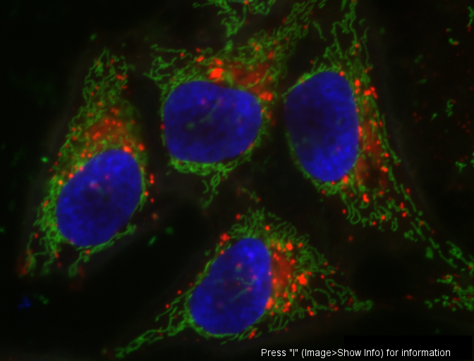
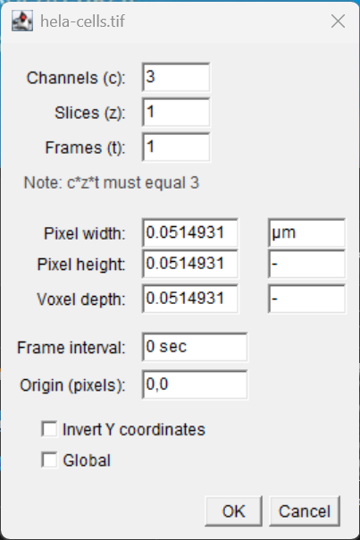
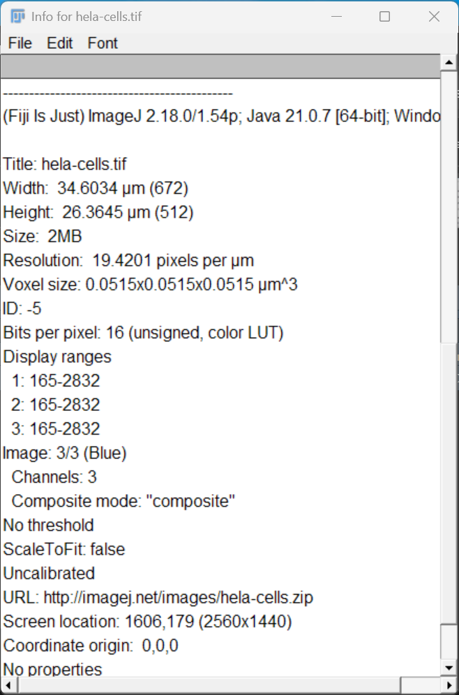

Images, Pixels and Metadata
Last updated on 2026-09-08 | Edit this page
Estimated time: 60 minutes
Overview
Questions
- How are digital images represented inside a computer?
- What information is stored alongside an image?
- Why is image metadata important?
- Why does image calibration matter for quantitative measurements?
Objectives
- Describe an image as a collection of pixels.
- Identify common image dimensions and image types.
- Inspect image metadata in Fiji.
- Explain the importance of spatial calibration.
- Distinguish between pixel measurements and real-world measurements.
Introduction
Before we can analyse biological images, we must understand what an image actually is.
Although images appear to us as visual representations of biological samples, computers do not “see” cells, nuclei, bacteria, or tissues.
Instead, computers store images as collections of numerical values.
In this episode we will explore how images are represented and how Fiji can be used to inspect image information and metadata.
Opening an Image
Start Fiji and open one of the built-in sample images.
Select: File → Open Samples → HeLa Cells

The image should appear in a new image window.
Take a moment to inspect the image.
What biological structures can you identify?
Although we immediately recognise cells and nuclei, the computer only sees a collection of numbers arranged in a grid.
Images Are Made Of Pixels
Digital images consist of small elements called pixels.
Pixel is short for: Picture Element
Each pixel stores a numerical value.
For grayscale images:
- low values appear dark
- high values appear bright
Together, large numbers of pixels create the images we recognise.
Zoom into the image using: View → Zoom → In
or the magnifying glass tool. (or use the + and
- keys.)
At high magnification the individual pixels become visible.
Challenge
Zoom into the image until individual pixels can be seen.
What shape are the pixels?
Pixels are arranged in a grid and appear as square elements.
But - pixels are not little squares.
Each pixel is a dimensionless sample stored as a numerical intensity value.
Image Dimensions
Biological images frequently contain more information than a simple two-dimensional picture.
An image may include:
- Width (X)
- Height (Y)
- Channels (C)
- Depth (Z)
- Time (T)
- Well number
Modern microscopy experiments often generate multidimensional datasets.
Exploring Image Properties
With the sample image open, select:
Image → Properties
A dialog box appears containing information about the image.

This information includes:
- image dimensions
- pixel size
- units
- number of slices
- number of frames
Collectively, this information forms part of the image metadata.
Fiji stores information describing the image alongside the pixel data, if the image has the metadata embedded.
Adding Calibration Information
Not all images contain calibration information.
For example:
- metadata may have been lost during file conversion
- images may have been exported incorrectly
- image files may have been cropped or modified outside Fiji
When calibration information is missing, Fiji reports measurements in pixels.
In some cases, the correct pixel size is known from the microscope settings or acquisition software.
Manually Setting Calibration
Suppose we know that:
1 pixel = 0.325 µmTo add this calibration information:
-
Select:
Image → Properties... -
Enter:
Pixel Width: 0.325 Pixel Height: 0.325 Unit of Length: µm Click OK.
The image is now calibrated.
Subsequent measurements will be reported in micrometres (µm) and square micrometres (µm²) rather than pixels.
Challenge
Open an image and inspect its properties:
Image → Properties...Does the image contain calibration information?
If not, assign a pixel size of:
0.5 µm/pixeland verify that the image dimensions update accordingly.
After entering the pixel size and units, Fiji updates the image properties.
Measurements are now reported using calibrated units rather than pixels.
Calibrating Using a Stage Micrometer
Sometimes the pixel size is unknown, but an image of a stage micrometer is available.
A stage micrometer is a microscope slide containing accurately spaced markings of known length.
To calibrate an image using a stage micrometer:
- Open the stage micrometer image.
- Select the Straight Line tool.
- Draw a line spanning a known distance on the micrometer.
e.g.
100 µmSelect:
Analyze → Set Scale...Fiji will automatically record the measured distance in pixels.
-
Enter:
Known Distance: 100 Unit of Length: µm Click OK.
Fiji will calculate the pixel size and store the calibration information.
The image can now be measured using physical units.
Adding a Scale Bar
Once an image has been calibrated, Fiji can add an accurate scale bar.
To add a scale bar:
Select:
Analyze → Tools → Scale Bar...-
Configure the scale bar settings:
- Width of the scale bar
- Height (thickness)
- Font size
- Colour
- Location within the image
Click OK.
A scale bar will be added to the image.
Scale bars are useful for:
- presentations
- posters
- publications
- communicating image scale to readers
A Word of Caution
Adding a scale bar permanently modifies the displayed image.
For quantitative analysis, it is generally best practice to:
- Perform all measurements on the original image.
- Add scale bars only to copies intended for presentation or publication.
The scale bar is only correct if the image is properly calibrated. Always verify calibration before adding a scale bar.
Discussion
Modern microscope acquisition software typically records calibration information automatically and stores it as image metadata.
However, calibration information can sometimes be lost when images are:
- exported to different file formats
- processed using other software
- cropped or modified
- shared without their accompanying metadata
For this reason, it is good practice to check calibration before beginning any quantitative analysis.
When measurements appear unexpectedly large or small, calibration should be one of the first things to verify.
What Is Metadata?
Metadata is often described as:
Data about data or Data that describes data
For microscopy images, metadata may include:
- pixel size
- microscope settings
- objective lens
- channel names
- acquisition date
- exposure information
- dimensional information
Without metadata, it can be difficult or impossible to interpret image measurements correctly.
Why Calibration Matters
Suppose two nuclei each occupy:
1000 pixelsAre they the same size?
Not necessarily.
The answer depends on the size represented by each pixel.
Measurements reported in pixels are often difficult to interpret biologically, unless comparisons are made.
Calibration allows measurements to be expressed in meaningful units such as:
- micrometres (µm)
- square micrometres (µm²)
- millimetres (mm)
Bit Depth
Pixel values are stored using a specific ranges of values that are computer friendly. These ranges are called the image “bit-depth”. They are dictated by the detector that was used to acquire the image.
Common bit depths include:
| Bit Depth | Possible Values | Type |
|---|---|---|
| 8-bit | 0 to 255 | Positive Integer |
| 16-bit | 0 to 65,535 | Positive Integer |
| 32-bit | Large numerical range | Floating Point (Fractions!) |
Higher bit depths allow finer graduations between intensity measurements. 32-bit floating point data can store non-integer and negative values.
In fluorescence microscopy, 16-bit images are commonly used.
To view image information, select: Image → Show Info

Why Metadata Must Be Preserved
Many image-analysis problems begin when image data are exported incorrectly.
For example:
- calibration may be lost
- channel information may disappear
- bit-depth may be changed
- dimensional information may be removed
When image information is lost, quantitative measurements become unreliable.
Good scientific practice includes preserving both:
- image data
- metadata
throughout an analysis workflow.
Images Are NOT Pictures - they are numerical datasets!
A microscopy image contains two equally important components:
- Pixel data
- Metadata
Removing the metadata is similar to removing labels from measurements in a spreadsheet.
The numbers remain, but their meaning may be lost.
Looking Ahead
Now that we understand how images are represented inside a computer, we can begin making quantitative measurements.
In the next episode we will learn how to:
- create regions of interest (ROIs)
- measure biological structures
- record quantitative measurements using Fiji
Key Points
- Digital images are collections of pixels.
- Each pixel stores a numerical intensity value.
- Biological images may contain multiple dimensions, including channels, z-slices and timepoints.
- Metadata describes how an image was acquired and interpreted.
- Calibration is required to convert pixel measurements into biological units.
- Bit depth influences the range of intensity values that can be recorded.
- Quantitative image analysis depends on preserving both image data and metadata.